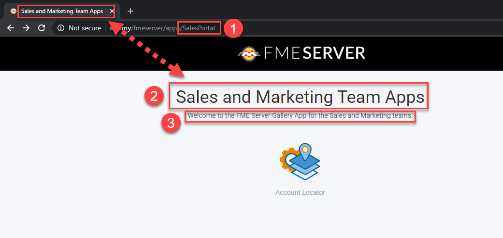
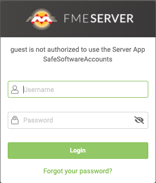
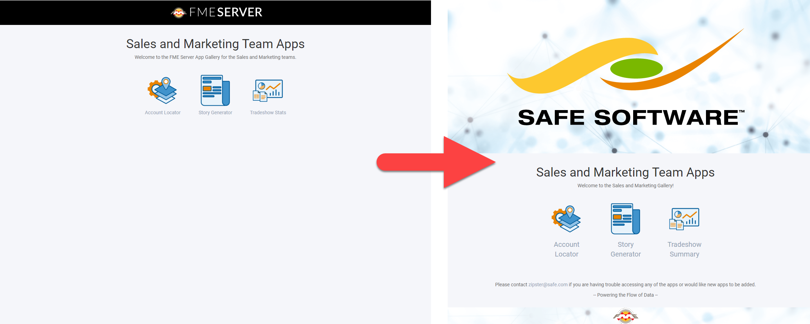
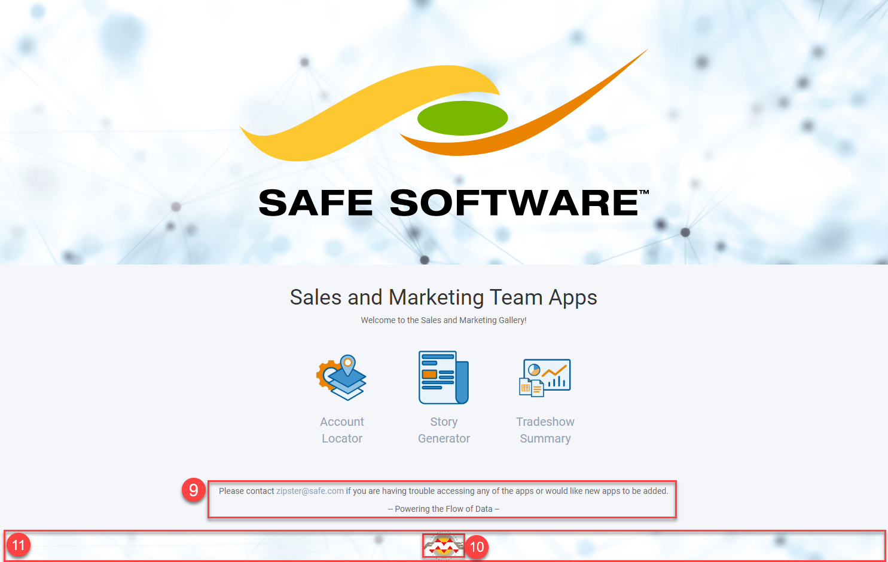

After completing this unit, you’ll be able to:
FME Server 2020.1+ has the ability to create Gallery Apps (Galleries). Simply put, Galleries act as landing pages for a collection of Workspace Apps and URLs. This enables users to access multiple apps from a single organized page. Similar to Workspace Apps, Galleries are both easy to build and customize as they require no prior knowledge of HTML, JavaScript, or CSS. In this unit, we’ll walk you through the Gallery App parameters to show you how easy it is to build a Gallery similar to the one shown below:
Start by logging into FME Server and navigating to the Server Apps > Build Gallery App page.
IMAGE
Now let’s take a look at the parameters to get an understanding of the elements that make up the Gallery. All of the parameters are optional with the exception of Name, so feel free to pick and choose which elements you want to make use of in your Gallery.
1. Name (Required): This will become part of the URL for the Gallery App (i.e. <servername>/fmeserver/apps/<name>) and will also be used within FME Server for managing your Galleries. Gallery names cannot be duplicated.
2. Title: This sets both the browser page title and the large body of text near the top of the page.
3. Description: A text body located just below the title that allows you to provide users with additional information about the Gallery.

4. Links: There are two types of links: Server Apps and URLs. Selecting Server App allows you to link to an existing Workspace App. Alternatively, you can choose the URL type to link to an external URL, for example, https://community.safe.com/s/. Links will always open in a new tab.
4.1. Label: Descriptive name of the app/URL that you are linking to that appears below the link image (if used).
4.2. Tooltip: When users hover their cursor over the link, a tooltip will appear. This is a good place to provide additional information or a brief description of the link so users can learn more about the link before opening it.
4.3. Image: Graphic representation to help users visually identify links. For best results, use a square icon that fills most of the area. Note: Take your Gallery to the next level by using a PNG with a transparent background.

5. Require Authentication: Gallery Apps can either be secured or open to the public. Enabling this will require users to provide authentication in order to access the Gallery App. Here you can specify which users and/or roles that are allowed to access the Gallery.
In FME 2020.1 the Gallery App is ‘static’ and the Workspace and Gallery App permissions are handled separately. This means that any user will be able to see all Workspace Apps that have been listed in the Gallery App whether they have permission to access the Workspace App itself or not.
For example, if you give the guest user permission to access the Gallery App but they do not have access to one of the linked Workspace Apps, when they click on this link they will then be presented with a second login page indicating their account is not authorized to access that specific Workspace App.

As of FME Server 2020.2, we now support a dynamic Gallery App that will show a filtered list of Workspace App links based on the user's access permissions. This is only available for Gallery Apps that require authentication and the filter only applies to Server App links (Workspace and Gallery Apps) and not generic URLs.
Similar to Workspace Apps, Gallery Apps give you the flexibility to customize the appearance. This is a great way to make Galleries look and feel like they were custom-built just for your organization. Check out the before and after customization image below to get an idea of what’s possible:

6. Browser Icon: This is the little icon you see in the browser tab to the left of the page title. It’s a subtle detail that makes your Gallery look more official.
7. Heading Banner Image/Background Color: While you can set both of these parameters, your banner will have a more uniform look if you use one or the other. Both the Banner Image and Background Color occupy the top of the page, spanning the entire width. You can get great results using either a rectangular image or simply by setting the background color. By default, the background color matches the rest of the page (color: #f5f6fa) but you can change this using the color picker or an HTML color code to match your organization's brand color.
The Heading Banner Image will always appear on top of the Background Color so there’s no need to remove the default color value. Note, if you intend to use a heading Logo Image, avoid using an image with a busy pattern as it may distract from the logo.
8. Heading Logo Image: Typically this is where you will place your organization's logo if it isn’t already in the Banner Image. Again, for best results, use a PNG with a transparent background to make the logo really pop on the page. If you don’t have an image with a transparent background, try setting the Heading Background Color to the same color as the background in the image to blend it in with the rest of the banner.

9. Footer Text: Need to include any other important info? The footer is a great place to add any additional information like who to contact if something goes wrong, a motivational quote, or even your organization's mission statement.
10. Footer Logo: Small logo that is either centered at the bottom of the page or on top of the Footer Banner (if used).
11. Footer Banner: Spans the width of the page and marks the bottom of the gallery app.

Create and customize a Gallery App.